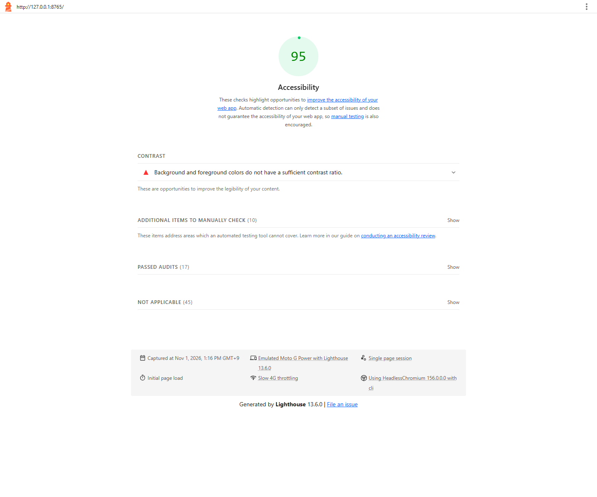
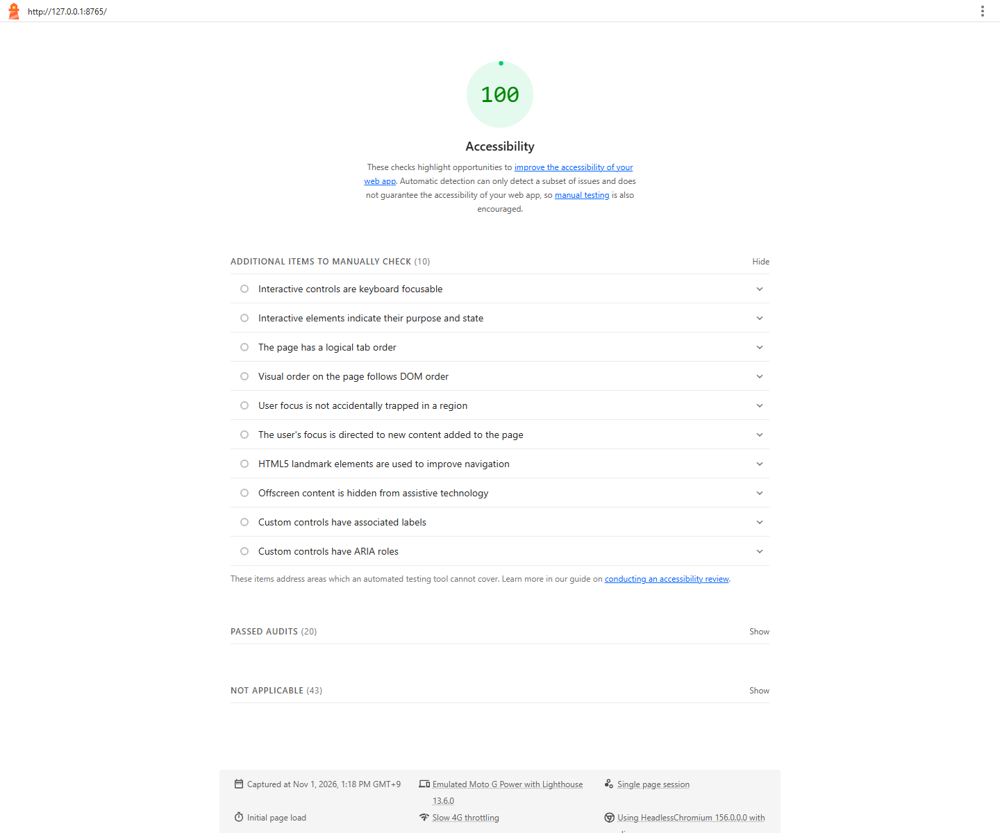

Web Programming · Week 9
Task — Accessibility Results
Lighthouse Accessibility-only audit of my course portfolio.
Audit results
Initial Accessibility score: 95/100

Final Accessibility score: 100/100

Three accessibility fixes
- Improved the week-number text contrast from 3.74:1 to 5.72:1.
- Improved the week-description text contrast from 4.18:1 to 5.72:1. Lighthouse flagged 14 text instances across both colors; all are fixed.
- Added a keyboard-accessible “Skip to main content” link and a focusable main-content target. Tested it with Tab and Enter.
Lighthouse reported one failing audit (color contrast), with 14 affected text instances. All reported contrast failures are fixed; the Accessibility score is now 100.